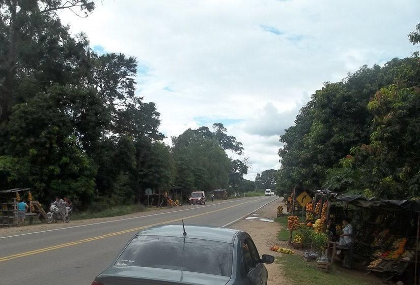
Terrestre
Rutas como la Nacional 34, en Salta, donde se concentró un tercio de los kilos incautados.
Se analiza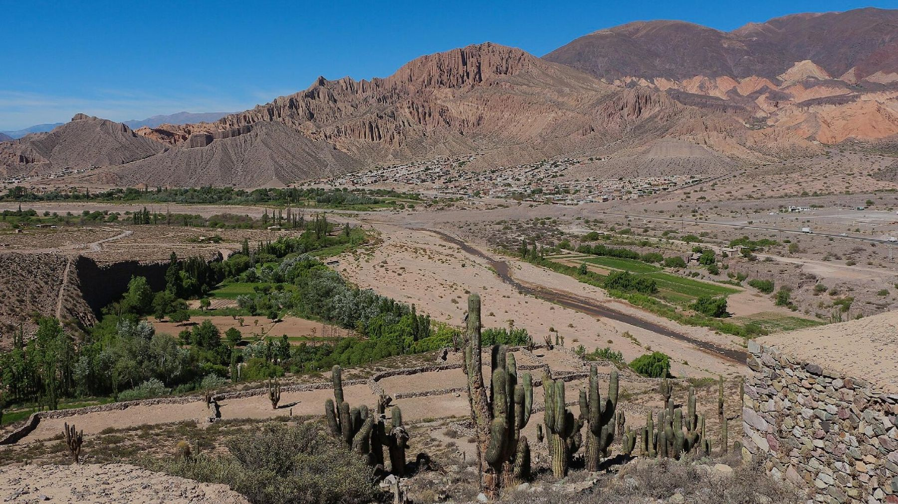
Prioridades para incorporar inteligencia artificial en Defensa (2020-2026)
Policy brief dirigido al Ministerio de Defensa de la Nación
Argentina es, sobre todo, un corredor de paso entre el origen y los mercados
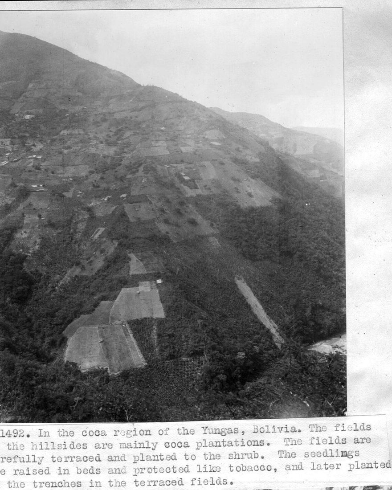
hectáreas de coca en 2025, tercer año de aumento
de los grandes cargamentos incautados en Argentina viene de Bolivia
de consumidores en el mundo (eran 17 M en 2013)
de cocaína producidas en el mundo en 2023: un 34% más que el año anterior. Es la droga que más crece.
Este trabajo se concentra en las vías terrestre y aérea

Rutas como la Nacional 34, en Salta, donde se concentró un tercio de los kilos incautados.
Se analiza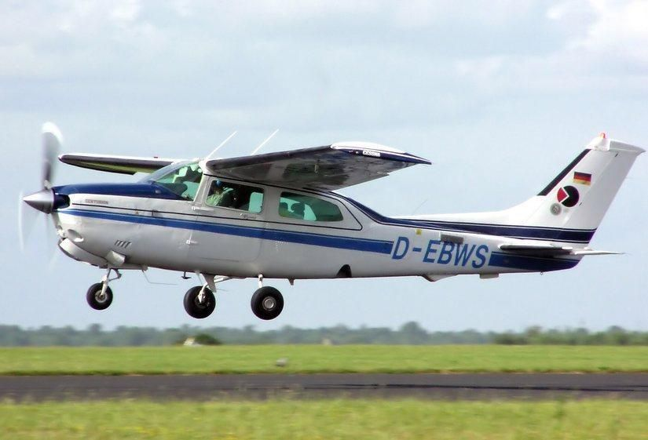
Avionetas que despegan de pistas clandestinas en Bolivia y Paraguay y aterrizan en caminos rurales.
Se analiza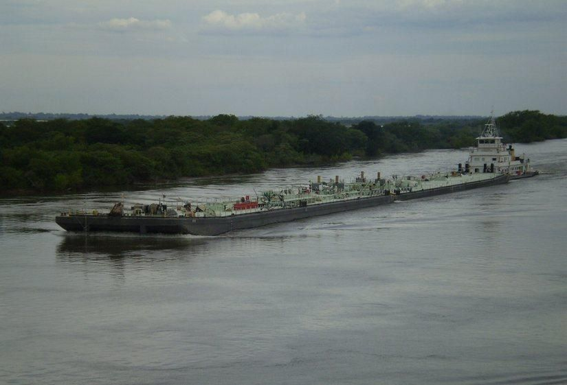
La Hidrovía Paraná-Paraguay, una vía ya consolidada hacia el exterior.
Fuera del estudioVuelos irregulares en el norte argentino, primer semestre de 2026
Menos del 3% de los vuelos detectados pudo vincularse con un cargamento de droga.
Defensa compra radares y drones por separado, sin un criterio que ordene qué incorporar primero.
¿Qué tecnología puede incorporar el Estado argentino para detectar mejor el narcotráfico en la frontera norte, con qué criterios y en qué orden, dentro de los límites legales y de presupuesto?
Objetivo general: evaluar cuatro líneas de modernización y proponer al Ministerio de Defensa un orden de prioridad fundamentado.
Describir lo que el Estado tiene hoy y sus brechas
Revisar qué hicieron otros países
Analizar las leyes que condicionan cada línea
Comparar las cuatro líneas con los mismos criterios
Proponer un orden, con hoja de ruta y plazos
Un recorte acotado para poder comparar opciones concretas
Coincide con la renovación de radares y los cambios en las normas de Defensa.
742 km de frontera. Para lo aéreo, se suma la ruta hacia Chaco, Santiago del Estero y Santa Fe.
El tráfico fluvial, la frontera con Paraguay, el consumo interno y el lavado de dinero.
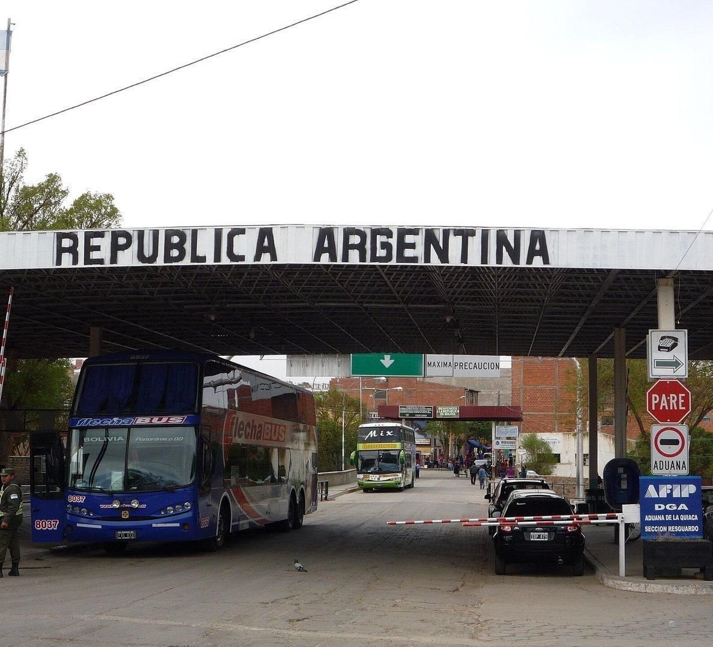
Nivel estatal: cómo decide el Ministerio de Defensa
Modelo del actor racional, análisis FODA y matriz de riesgo.
Cada alternativa se compara por costo, cobertura, evidencia, restricción legal y plazo.
Investigación documental. Cada dato se clasifica según su grado de certeza.
No existe una tasa de detección publicada.
No hay costos con fuente para el software.
La evidencia técnica es mayormente extranjera.
Lo que existe hoy y qué le falta
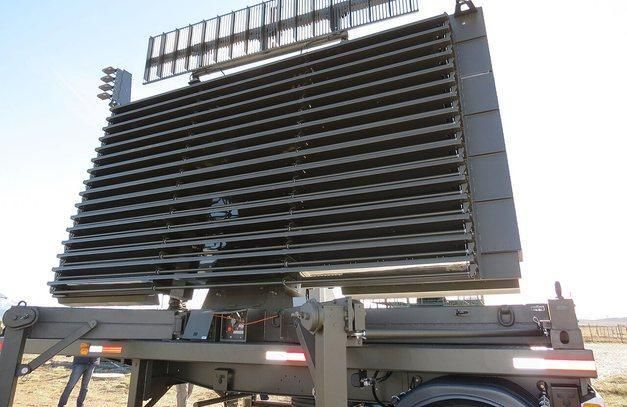
Los nuevos RPA-200M de INVAP siguen más de 1.000 blancos a la vez.
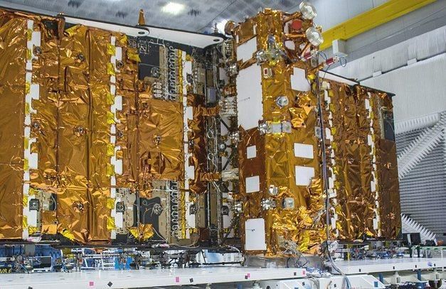
Satélites argentinos de radar, pensados para el suelo y las emergencias.
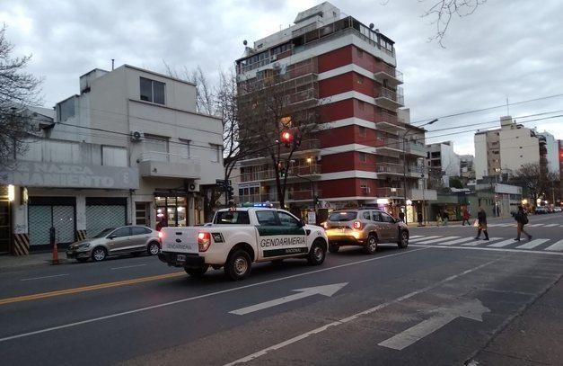
11 torres con radares, cámaras y lectoras de patentes.
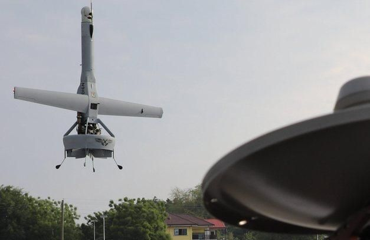
Compras en curso, como los V-BAT donados por EE.UU.
Qué puede hacer hoy Defensa ante un avión sospechoso (Decreto 171/2023)
Zonas rurales de frontera (Operación Roca). Vigila el espacio aéreo.
Pasos fronterizos y ciudades. Actúa cuando el avión ya aterrizó.
La inteligencia artificial ya se usa para detectar pistas y vuelos, sobre todo en pruebas
de precisión de un modelo de IA de la Fuerza Aérea para detectar pistas
pistas clandestinas halladas con IA y comprobadas en el terreno
pistas detectadas con imágenes satelitales por periodistas
de acierto de un clasificador de vuelos sospechosos (en prueba)
vuelos ligados a drogas identificados por su sistema (2012-2018)
Un piloto sin presupuesto continuo no alcanza.
Cada línea debe nacer con indicadores para evaluarla.
Sumar datos de radares de países vecinos.
Quién decide y dónde chocan los intereses
INVAP y CONAE: autonomía, pero más lento y caro.
EE.UU.: equipos donados, pero con dependencia.
Lo pide Salta y hay un proyecto de ley.
Fue eliminado en 2023 y la regla sigue vigente.
Tiene los radares y los medios militares.
La ley le asigna el narcotráfico y los pasos.
Cuatro opciones independientes entre sí
Un software de IA sobre los radares que ya existen ordena qué vuelos son más sospechosos.
Un modelo que encuentra pistas clandestinas en imágenes satelitales y aéreas.
Unir los datos de Gendarmería con los radares y probar sensores de fibra óptica.
Exigir detección automática en los drones que ya se están comprando.
Un programa que analiza los vuelos que ya detectan los radares y avisa cuáles son más sospechosos. La decisión final la toma siempre un operador.
Radares argentinos de INVAP que siguen más de 1.000 aviones a la vez, pero no los clasifican.
De 190 vuelos detectados, solo 5 se vincularon con droga. Ayuda a no perder tiempo con falsas alarmas, como fumigadores o planes de vuelo tardíos.
Un archivo de vuelos ya confirmados para entrenar el modelo. No hace falta una ley nueva.
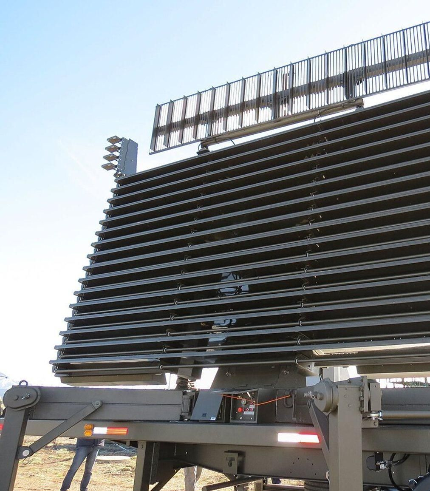
Un modelo que revisa imágenes satelitales y aéreas y marca los lugares que podrían ser pistas clandestinas.
Satélites SAOCOM y SIASGE, pensados para medir el suelo y atender emergencias. No se usan para buscar pistas.
Encontrar dónde aterrizan las avionetas, aun cuando usan caminos rurales de menos de 400 metros.
Imágenes ópticas abiertas o comerciales y las pistas ya halladas para entrenarlo. No vigila a personas.
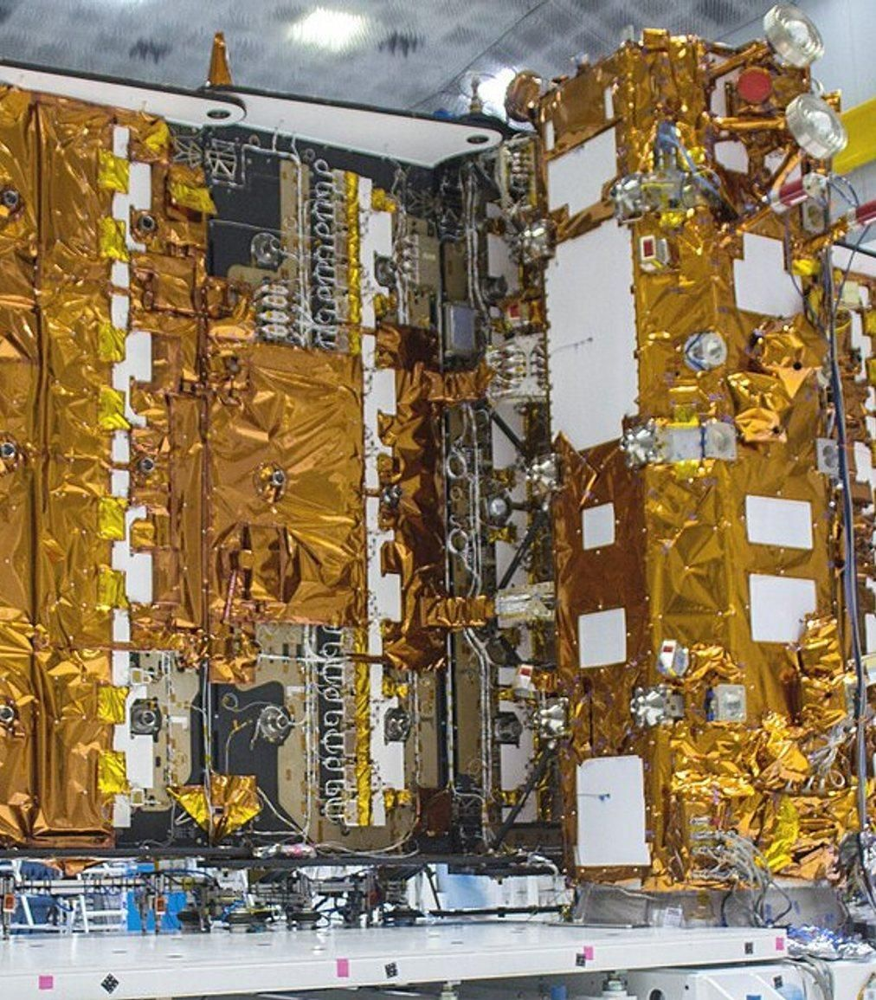
Unir la información de Gendarmería con la de los radares aéreos y probar sensores de fibra óptica en un corredor sin cobertura.
El SVIF de Gendarmería: 11 torres con radares, cámaras y lectoras de patentes. Sus datos no se cruzan con los de la Fuerza Aérea.
Que no se pierda el rastro cuando el avión aterriza y la responsabilidad pasa de Defensa a Seguridad.
Un convenio entre Defensa y Seguridad, permisos para el tendido y una cotización confiable.
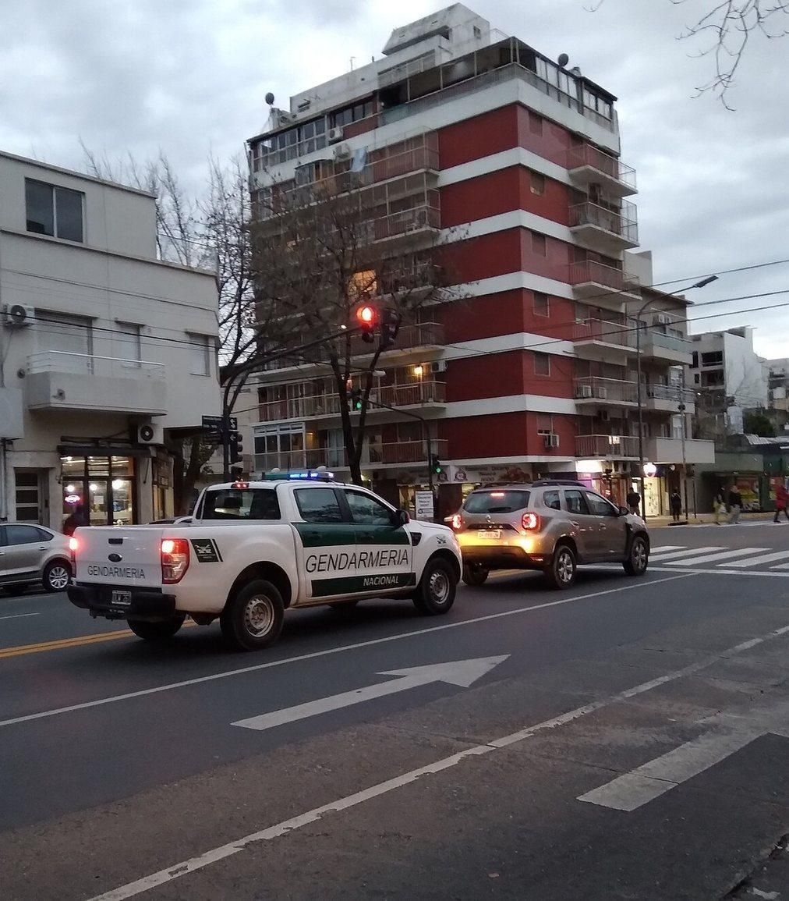
Exigir que los drones que ya se están comprando incluyan detección automática de vehículos, personas o pistas.
El Ejército licita drones, Seguridad compra 33 y la Armada recibe V-BAT de EE.UU. Ninguna compra lo exige.
Que cada vuelo de dron sirva para encontrar algo, sin depender de que alguien mire todo el video.
Incluir el requisito en los pliegos antes de adjudicar y acordar un estándar común con Seguridad.
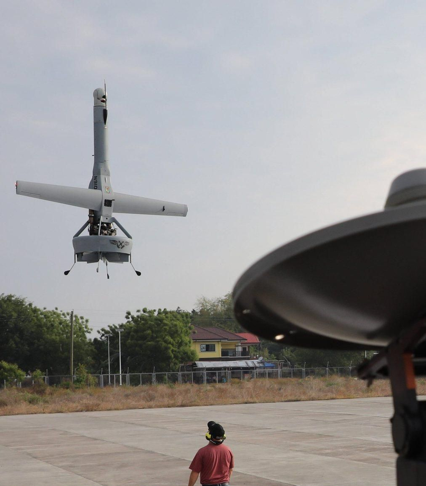
El mayor riesgo es legal e institucional: ninguna tecnología lo resuelve sola
Elegimos opciones que funcionan aunque no cambien las leyes ni llegue más presupuesto
Es la única brecha medida en el país (5 de 190) y usa radares ya instalados.
Cuesta casi nada pedirlo ahora en las compras abiertas; la oportunidad se cierra al adjudicar.
Es la de mejor evidencia regional y no vigila personas. Se prueba con imágenes ópticas.
Tiene alto impacto, pero necesita un convenio con Seguridad y una cotización confiable.
Cada fase tiene un indicador para saber si funciona
Requisito de detección en las compras de drones. Convenio de datos con Seguridad. Archivo de vuelos confirmados.
Compras con el requisito; convenio firmado
P1 sobre un radar del corredor norte. P2 con imágenes sobre pistas ya halladas.
Falsas alarmas frente a la revisión manual
Medir contra la situación inicial y decidir si se amplía.
Más vuelos irregulares vinculados a hallazgos
P3: conectar Gendarmería y radares; ensayo de fibra óptica en un corredor.
Tiempo de traspaso entre aire y tierra
Argentina ya tiene radares, satélites, sensores y drones. Lo que falta es que esa información se clasifique y llegue a quien puede actuar.
De 190 vuelos sospechosos, solo 5 se pudieron vincular con droga.
Empezar por IA sobre los radares que ya existen (P1) y exigir detección automática en los drones que se están comprando (P4).
Son las opciones más baratas, más rápidas y que no necesitan cambiar ninguna ley.
La tecnología sola no alcanza: detectar mejor sirve si se conecta con la interceptación en tierra y con la justicia.
Gracias · Preguntas